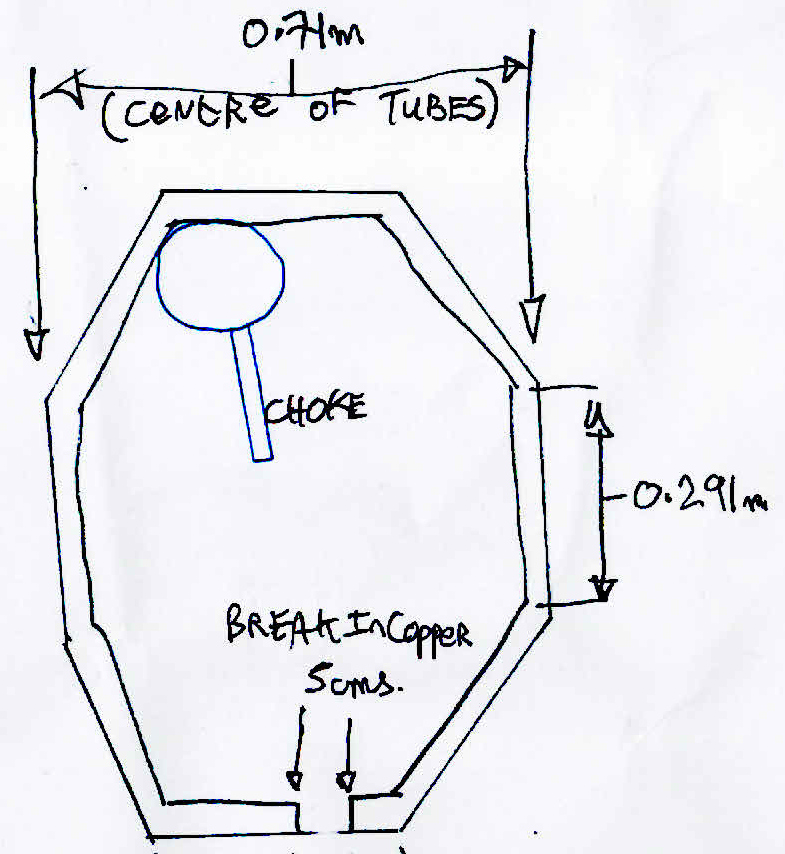
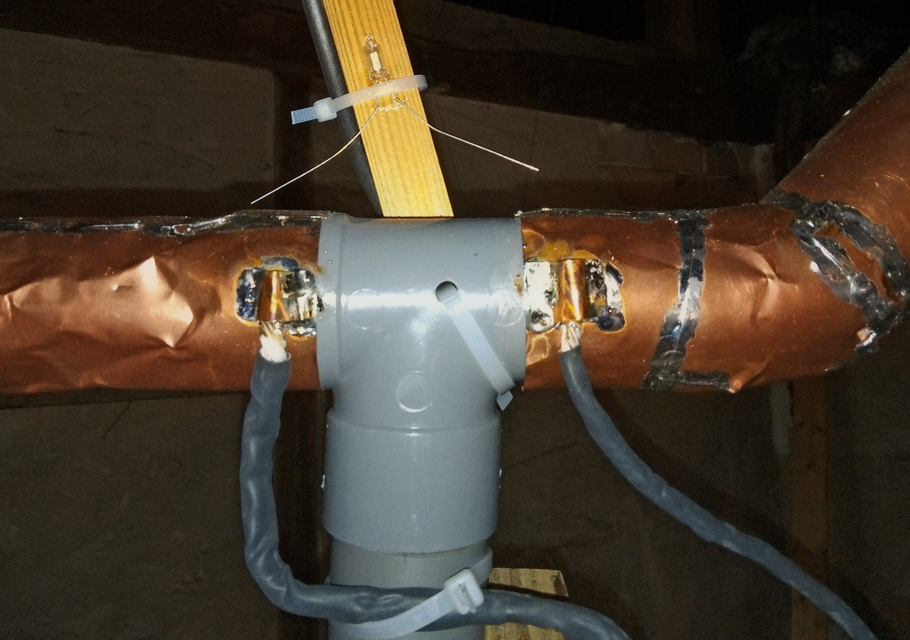
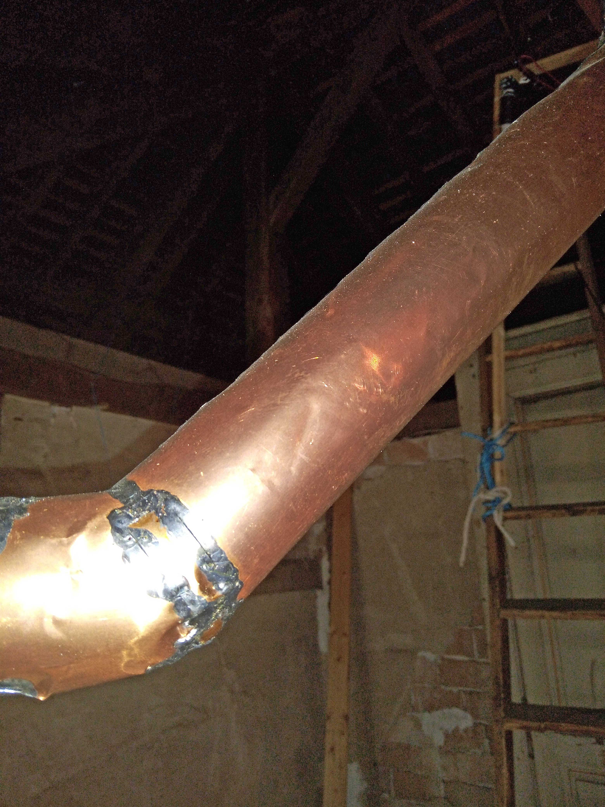
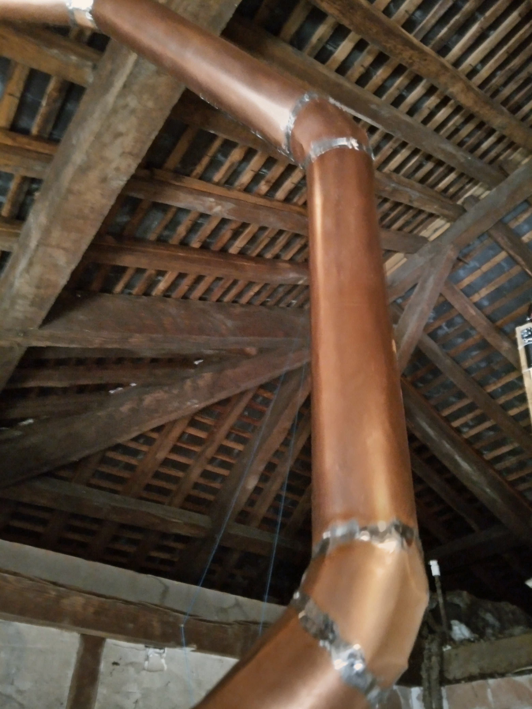
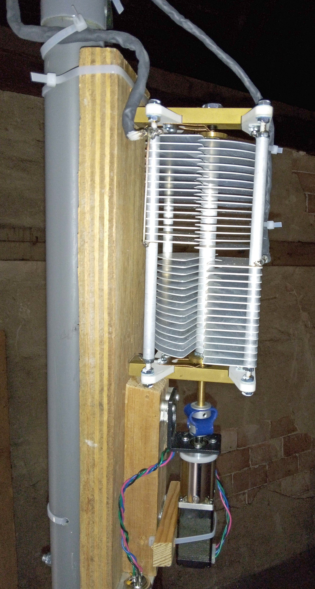
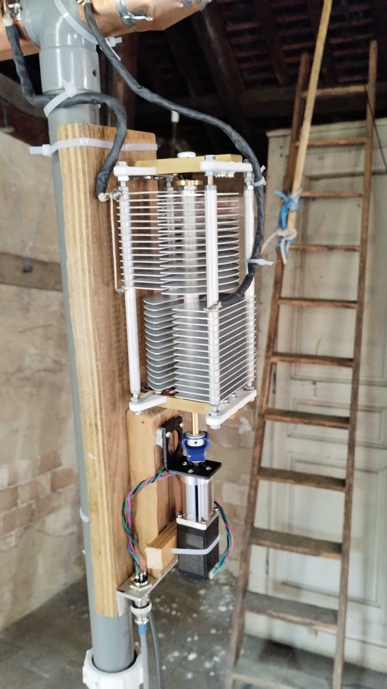
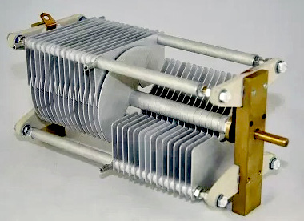
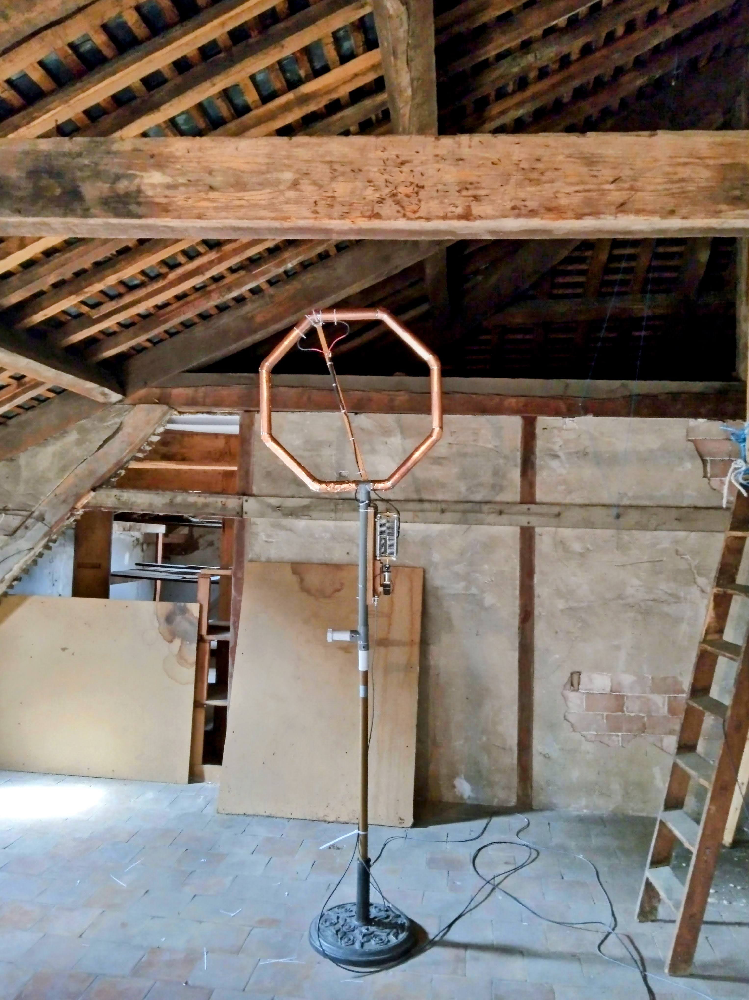
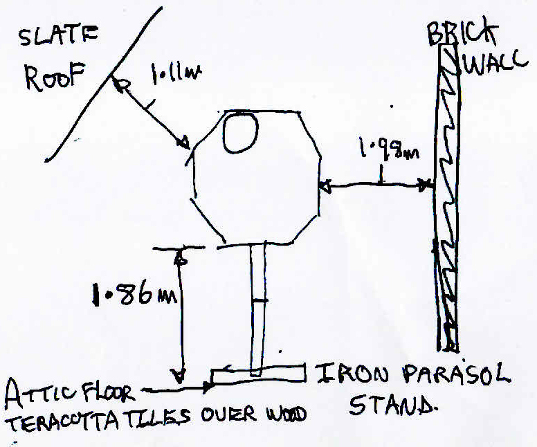
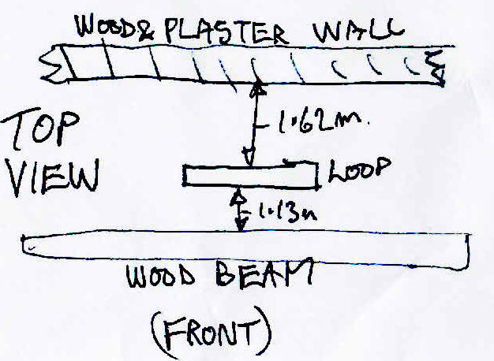

Info: Mag loop made of copper foil glued to PVC pipe, with an air-variable capacitor.
Conductor: Copper foil 0.1 mm glued to a 45 mm PVC pipe. Joints were soldered with soft solder.
Capacitor: Air-variable capacitor, 4 mm spacing, 10-175 pF, unknown type or brand.
Environment: In the attic, in a wooden structure with brick walls, 1.86 m above floor.
Thanks: Many thanks to Richard F4WDO for the measurements, drawings, and emails.
| Band | 20m | 15m | 10m | |
| Frequency f | MHz | 14.074 | 21.127 | 28.093 |
| Intrinsic bandwidth Bint | kHz | 41.3 | 83.6 | 189.1 |
| Source of Bint | S-Parameters | |||
| Loop diameter D | m | 0.729 | ||
| Conductor diameter d | m | 0.045 | ||
| Loop count n | 1 | 1 | ||
| Inductance L | H | 1.31e-06 | ||
| Capacitance C | pF | 97.6 | 43.3 | 24.5 |
| Unloaded Q0 | 1 | 341 | 253 | 149 |
| Damping resistance RT | Ohm | 0.340 | 0.689 | 1.557 |
| Radiation resistance RR | Ohm | 0.0266 | 0.136 | 0.429 |
| Loss resistance RLoss | Ohm | 0.313 | 0.553 | 1.129 |
| Power to antenna Pfwd | W | 100 | 100 | 100 |
| swr_min_ant | 1 | 2.03 | 1.70 | 1.05 |
| etaSWR_ant | % | 88.5 | 93.3 | 99.9 |
| Power antenna load Pload | W | 88 | 93 | 100 |
| Antenna efficiency η | % | 6.91 | 18.4 | 27.5 |
| Loop current I rms | A | 16.13 | 11.64 | 8.01 |
| Loop voltage Uloop rms | V | 1869 | 2024 | 1853 |
| Magnetic dipole moment m | A m² | 6.737 | 4.860 | 3.345 |
| Link to calculator | calculator | calculator | calculator | |







| One half of the capacitor | |||
| Plate thickness | dp | 0.8 | mm |
| Clearance | dc | 1.6 | mm |
| Plate spacing | ds = 2 dc + dp | 4 | mm |
| Stator plates | ns | 15 | |
| Rotor plates | nr | 15 | |
Total air gap for both capacitors in series: 3.2 mm.
Rule of thumb for dielectric strength: 3 kVp/mm.
Up = 9.6 kVp.
Urms = Up / √2 = 6.8 kV.



The measurements were taken from the shack. The VNA was calibrated directly at the VNA. There was 15 m of LLF240 coaxial cable between the VNA and the antenna.
The equipment used was the 'original small NanoVNA' with NanoVNA-Saver v0.73.
Richard performed these measurements following my instructions. The sweep range was from 0.5 MHz to 30 MHz logarithmically, with 200 segments and 20,000 measurement points. This worked well, and my evaluation procedure worked perfectly.
The calibration was done directly at the 'original small NanoVNA': green line. The cable influence was measured and removed.
The cable attenuation alpha and the cable delay tau in the following table show the estimated cable values based on the 'original small NanoVNA' measurement.
| File | model f0 MHz |
model Bint kHz |
model alpha db |
datasheet alpha db |
model_tau ns |
datasheet tau ns |
SWR_min_vna | SWR_min_ant | eta SWR |
|---|---|---|---|---|---|---|---|---|---|
| F4WDO_magl_10m_VALUES.py | 28.093 | 189.1 | 0.706 | 0.601 | 64.91 | 60.00 | 1.05 | 1.05 | 0.999 |
| F4WDO_magl_15m_VALUES.py | 21.127 | 83.6 | 0.617 | 0.547 | 65.36 | 60.00 | 1.58 | 1.70 | 0.933 |
| F4WDO_magl_20m_VALUES.py | 14.074 | 41.3 | 0.523 | 0.481 | 66.56 | 60.00 | 1.86 | 2.03 | 0.885 |
The measured damping coefficient aplha and delay tau agree very well with the values estimated from the datasheet.
The following diagrams: red points = measured values; green line = fitted model.
| Smith | SWR | Values | |||||||||||||||||||||||||||
|---|---|---|---|---|---|---|---|---|---|---|---|---|---|---|---|---|---|---|---|---|---|---|---|---|---|---|---|---|---|
F4WDO_magl_10m |
F4WDO_magl_10m |
F4WDO_magl_10m
|
|||||||||||||||||||||||||||
F4WDO_magl_15m |
F4WDO_magl_15m |
F4WDO_magl_15m
|
|||||||||||||||||||||||||||
F4WDO_magl_20m |
F4WDO_magl_20m |
F4WDO_magl_20m
|
This is a nice home-built antenna.
The large conductor diameter results in remarkable efficiency. It is great to see projects like this.
Overview of all Antennas with filter/selection: compare page
Overview of all Antennas static: static compare page
2026 Peter Märki (HB9ISP). This project is created in my free time and has no commercial background. Provided without warranty of any kind. Feedback is welcome.